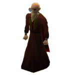
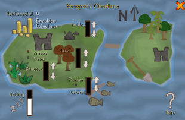

")
Miscellania verwalten
Einführung

Voraussetzungen
Wenn ihr das Abenteuer 'Miscellanias Thron' abgeschlossen habt, werdet ihr zum Herrscher eures eigenen Königreichs ernannt, das ihr regieren könnt. Ihr werdet folgende Untertanen haben:
- Bergmann
- Holzfäller
- Gärtner
- Fischer
Nach Beendigung des Abenteuers 'Königlicher Zwist' werdet ihr zusätzlich auf folgende Untertanen zurückgreifen können:
- Schreiner
- Bauer
Um auszuhelfen (und damit euren Gunstfaktor zu erhöhen), benötigt ihr folgende Mindestanforderungen:
- Bergbau auf Stufe 30 und eine Spitzhacke, um Bergmann Bernhard auszuhelfen.
- Holzfällerei auf Stufe 45 und eine Axt, um Holzfäller Heiko auszuhelfen.
- Landwirtschaft auf Stufe 10 und einen Rechen, um Gärtnerin Gesine auszuhelfen.
- Fischen auf Stufe 40 und eine Hummerreuse, um Fischer Fritz auszuhelfen.
- Holzfällerei auf Stufe 35 und eine Axt, um dem Schreiner aus Etceteria auszuhelfen (ihr müsst dafür das Abenteuer 'Königlicher Zwist' abgeschlossen haben).
- Landwirtschaft auf Stufe 10 und einen Rechen, eine Gießkanne oder einen Eimer Kompost, um dem Bauern aus Etceteria auszuhelfen (ihr benötigt dafür außerdem das Abenteuer 'Königlicher Zwist').
Wie ihr euer Königreich kontrolliert
 Um anzufangen, euer Königreich zu verwalten, müsst ihr als Erstes Berater Ghrim aufsuchen. Ihr könnt ihn im Thronsaal von König Vargas im Palast von Miscellania finden.
Ihr könnt mit ihm sprechen und die Option 'Wie steht es um das Königreich?' benutzen, um herauszufinden, wie es euren Untertanen geht. Darüber hinaus wird er euch mit Rat und Tat zur Seite stehen und euch Tipps und Tricks zum Regieren eines Königreichs geben.
Wenn ihr mit Berater Ghrim sprecht, könnt ihr auch die Kontroll-Schaltfläche für euer Königreich öffnen, die etwas später in diesem Artikel genauer erklärt wird.
Untertanen und Gunstfaktoren

Hier kam der Gunstfaktor mit ins Spiel. Eure Untertanen werden viel härter arbeiten und mehr Rohstoffe erwirtschaften, wenn euer Gunstfaktor hoch ist. Sollte euer Gunstfaktor sehr gering/nahe Null sein, werdet ihr feststellen, dass eure Untertanen fast nichts erwirtschaften.
Ihr könnt euren Gunstfaktor erhöhen, indem ihr zusammen mit euren Untertanen arbeitet. Der Gunstfaktor wird über die Zeit sinken, daher ist es das Beste, wenn ihr euren Untertanen regelmäßig einen Besuch abstattet, damit ihr möglichst viel von ihnen habt.
Vergesst nicht, dass ihr jederzeit bei Berater Ghrim auftauchen und euren aktuellen Gunstfaktor überprüfen könnt.
Reichssäckel und Einzahlungen

Wichtig: Landwirtschaft und Hartholz werdet ihr in diesem Fenster erst dann vorfinden, wenn ihr das Abenteuer 'Königlicher Zwist' abgeschlossen habt.
Hier könnt ihr die Reichssäckel und das Gold, das ihr eingezahlt habt, sehen. Wenn ihr das Abenteuer 'Miscellanias Thron' abgeschlossen habt, werdet ihr feststellen, dass die maximale Menge, die ihr in die Reichssäckel einzahlen könnt, 5 Millionen Goldmünzen sind. Wenn ihr das Abenteuer 'Königlicher Zwist' abgeschlossen habt, wird diese Beschränkung auf 7,5 Millionen Goldmünzen erhöht.
Eure Untertanen werden für ihre Arbeit aus den Reichssäckeln bezahlt. Sie erhalten ein Zehntel (bis zu einem Maximum von 50.000 bzw. 75.000, wenn ihr das Abenteuer 'Königlicher Zwist' abgeschlossen habt) pro Tag aus den Reichssäckeln für ihre Mühen als Lohn (wenn eure Reichssäckel also mit 5 Millionen gefüllt sind, würden jeden Tag 50.000 Goldstücke als Lohn entnommen werden, bzw. 75.000, wenn ihr 'Königlicher Zwist' abgeschlossen habt. Wenn ihr 300.000 Goldmünzen in den Reichssäckeln habt, werden nur 30.000 an die Bürger verteilt.). Je mehr Lohn bezahlt wird, desto eifriger werden eure Untertanen arbeiten, und ihr könnt mehr Naturalien von ihnen erwarten. Wenn die Reichssäckel kein Gold enthalten, werden eure Untertanen sich darauf konzentrieren müssen, genügend für ihren Lebensunterhalt zu produzieren. Daher werden sie dann keine Naturalien für euch sammeln können.
Teilt euren Untertanen Arbeit zu
Ihr seid Herrscher über euer Königreich, daher ist es einfach angemessen, dass ihr entscheidet, was eure Untertanen tun sollen. Wie oben erwähnt, könnt ihr mit Berater Ghrim sprechen, um die Kontroll-Schaltfläche eures Königreichs zu öffnen.
Wenn ihr diese Schaltfläche geöffnet habt, beachtet die Pfeile, die neben jeder der verschiedenen Naturalien stehen. Ihr könnt Arbeiter/Untertanen auf die Bereiche eurer Wahl verteilen, und auch entscheiden, wie viele Arbeiter ihr diesem Bereich zuteilen wollt. Ihr könnt beispielsweise viele Arbeiter dem Sammeln von Kräutern und Holz zugeteilt haben, oder auch eure Arbeiter über die verschiedenen Bereiche gleichmäßig verteilt haben, damit sie von Allem ungefähr die gleiche Menge sammeln.
Die Anweisungen an eure Untertanen sind nicht in Stein gemeißelt. Wenn ihr euch also entscheidet, dass ihr andere Naturalien benötigt, benutzt einfach den Pfeil, der nach unten zeigt, um Untertanen von dieser Aufgabe zu entfernen, damit ihr sie einer anderen Aufgabe zuteilen könnt.
Abholen eurer Naturalien
Wenn euer Gunstfaktor euren Vorstellungen entspricht, ihr etwas Gold in eure Reichssäckel eingezahlt und ihr euren Untertanen Arbeit zugeteilt habt, braucht ihr einfach nur mindestens einen Tag zu warten. Geht dann wieder zurück zu Berater Ghrim.
Wenn eure Reichssäckel leer sind, eure Untertanen nicht arbeiten oder ihr weniger als einen Tag nach der letzten Änderung eurer Anweisungen mit Berater Ghrim sprecht, wird er euch mitteilen, dass eure Untertanen nichts gesammelt haben.
Wenn eure Untertanen ein paar Naturalien gesammelt haben, werden die Naturalien aber direkt in euer Bankschließfach transferiert. Berater Ghrim wird euch auch eine Liste von den Naturalien, die ihr erhalten habt, geben. Ihr könnt also sehen, was ihr bekommen habt, ohne einen Blick in die Bank werfen zu müssen.
Solltet ihr nicht genügend Platz für alle Naturalien in eurem Bankschließfach haben, können noch bestimmte Naturalien (wie beispielsweise alle möglichen Samen oder alle möglichen Kräuter) in die Bank eingezahlt werden. Alle Naturalien können dann aber nicht mehr eingezahlt werden. Ihr werdet eine Nachricht erhalten, wofür ihr schätzungsweise keinen Platz haben werdet, zum Beispiel für Samen oder für Kräuter.
Sobald Berater Ghrim eure Naturalien eingezahlt hat, oder keine Naturalien gesammelt wurden, wird er euch die Möglichkeit geben, euren Untertanen neue Arbeit zuzuweisen und Gold in die Reichssäckel einzuzahlen (oder zu entnehmen).

Weitere Artikel in Diverse Anleitungen
|
|
|
Weiterführende Informationen Wenn euch dieser Artikel nicht weitergeholfen hat, könnt ihr in den folgenden Kapiteln der RuneScape-Webseite mehr Informationen finden:
|
|